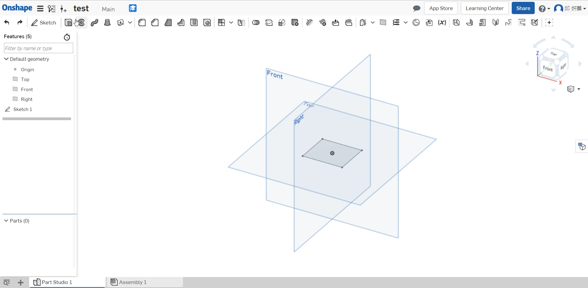
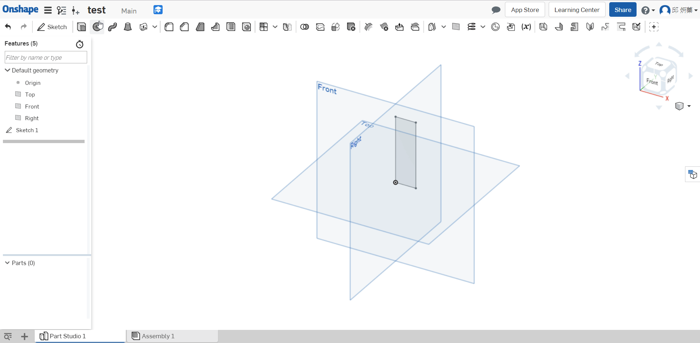
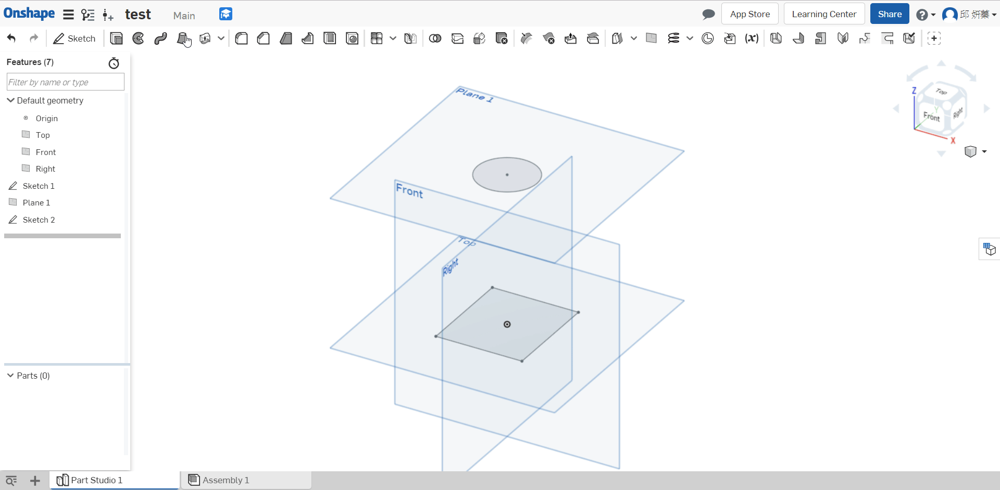
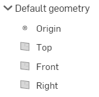
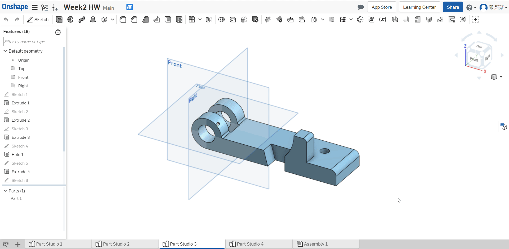

OnsharpWeek1 Assessment
Q : What’s the quickest way to learn more about each feature in the toolbar?
A : Hover the mouse over(將鼠標懸停在上面) it for a second, and a description of the feature will pop up.

Q : Briefly(簡要) describe the four foundational features. Feel free to draw pictures if it helps:
A : Extrude: This geometry is created when a constant cross section(截面) is extruded in a straight direction

Revolve: This geometry is created when a constant cross-section is revolved
around an axis of revolution.

Sweep: This geometry is created when a constant cross-section is swept along a
path.

Loft: This geometry is created when multiple cross sections are smoothly
connected together.

Q : What is the default geometry in a Part Studio?
A : The origin and three orthogonal(正交) planes: Top, Front, Right.

Q : What’s the difference between a box select from Left-to-Right and a box select from
Right-to-Left?
A : L-R = selects everything within the box,

R-L = selects everything the box touches.

Q : Can a document in Onshape have multiple Part Studios(多個零件)?
A : Yes.

OnsharpWeek1 Homework << Previous Next >> W5